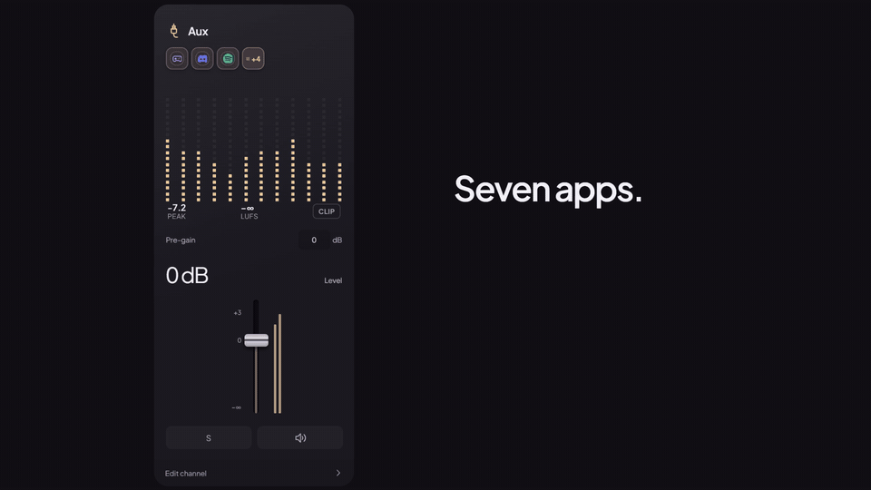
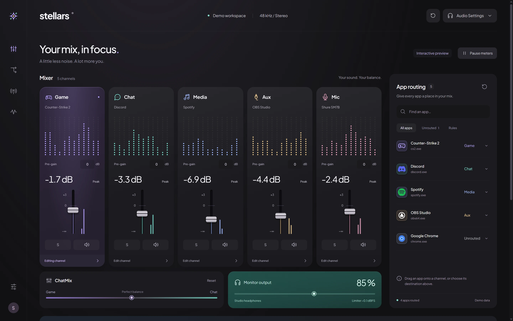
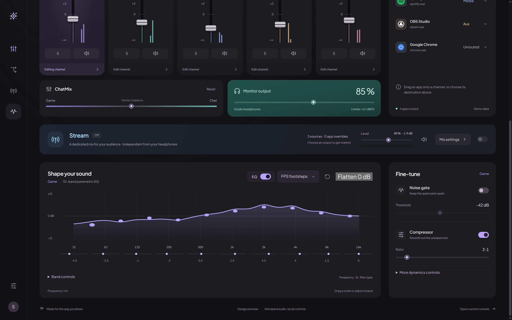
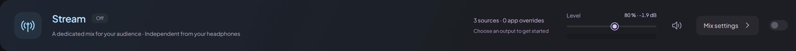

Game
Competitive titles and 3D audio with presets like FPS Footsteps.
Stellars is a multi-bus audio router and 48 kHz Float32 DSP mixer for Windows 10 and 11. Route games, voice chat, music, and your microphone across five dedicated channels—with zero kernel drivers and under 15 MB RAM in the system tray.

Competitive titles and 3D audio with presets like FPS Footsteps.
Discord, TeamSpeak, and voice comms with AI noise suppression.
Spotify, browsers, and background playlists balanced independently.
Alerts, soundboards, OBS monitoring, or secondary applications.
Hardware microphone pipeline with gate, compressor, de-esser, and AI denoise.
Click any numbered pin or switch views below to inspect how Stellars organizes routing, metering, parametric EQ, and your Stream mix.

Stellars runs entirely in Ring-3 user mode using Windows Process Loopback and a silent dummy sink—never installing a kernel driver of its own.
Captures audio directly from each running executable via VAD\Process_Loopback using PROCESS_QUERY_LIMITED_INFORMATION only.
Redirects routed apps through IAudioPolicyConfig to a silent sink so you never hear unprocessed double-audio.
Each bus runs 48,000 Hz stereo Float32 processing with 10-band RBJ biquad EQ, dynamics, and rtrb SPSC ring buffers.
Sends your balanced mix + ChatMix through a -0.1 dBFS master limiter to headphones, and an independent mix to Stream.
Every channel carries a full parametric EQ and dynamics rack, engineered for immediate visual feedback and zipper-free adjustments.
Direct Form II Transposed RBJ biquads with 128-frame linear ramping. Drag nodes on the curve, switch presets (Flat, FPS Footsteps, Voice Clarity, Bass Boost), or A/B custom curves.
Noise gate, soft-knee compressor, de-esser, and limiter with live gain-reduction readouts—plus one-click starting points like Streaming voice, Noisy room, and Hear footsteps.
Available for both Mic and Chat buses. Pick RNNoise for ultra-low latency or DeepFilterNet3 for maximum studio clarity.
Automatically lower chosen buses while another is active, and save full mixes as Scenes that can auto-apply when a chosen app gains focus.


Send a separate 48 kHz stereo mix to its own virtual cable so OBS and your audience hear exactly what you choose—without touching what you hear in your headphones.
Mute Spotify in your headphones or tilt ChatMix toward Discord mid-game while keeping your stream's audio balance steady.
Include whole buses (Game, Chat, Media, Aux, processed Mic) and override individual executables with persistent Include or Exclude rules.
Monitor the exact Stream mix in your headphones with one click to verify levels, without altering your saved mix.
Lightweight in the background, resilient when devices unplug, and ready for both casual setups and power users.
| Operating System | Windows 11, or Windows 10 build 20348 or later (64-bit) |
|---|---|
| Runtime & Footprint | Microsoft Edge WebView2 (installed automatically if missing). Closing the window releases the UI and leaves only the audio engine running (< 15 MB RAM in tray). |
| Virtual Audio Cable | VB-CABLE is set up by the installer for Stream and Mic routes, and can be repaired or re-routed anytime from Hardware I/O. |
| Interface Modes & Themes | Start in Simple mode or reveal every control in Advanced mode. Switch Light and Dark themes anytime with Alt+T. |
| Reliability & Backups | Automatic device reconnection, resource-saver meter throttling when hidden, one-click settings/preset backups, and built-in diagnostics for audio load and underruns. |
Download the latest Windows installer from GitHub Releases and follow the first-run wizard.
Start a game, voice call, or music player so it appears in the App routing pool.
Drag the app onto Game, Chat, Media, or Aux—or pick a bus from its menu.
Adjust faders, press S to solo, or open Edit channel to shape EQ and dynamics.
Optional: enable Stream, pick your virtual cable, and select it in OBS.
Closing the window keeps audio routing active; right-click the tray icon for quick actions.